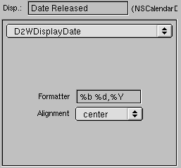

PATH
Documentation > WebObjects 4.5 >
Tools and Techniques
Changing How Properties Are Displayed
You can use the Customize Properties display of the Web Assistant to specify various display characteristics of properties, such as formatting, color, alignment, and the representation of relationships. The fields and controls for setting these characteristics are on the right half of the display. Here is an example:

Let's go over the various elements of this part of the user interface:
-
At the top is the Display field, which holds the title of the property for the current page and entity. As discussed in
Setting Which Properties are Displayed
, you can edit this string.
-
Next to the Display field, in parentheses, is its data type. The data type determines the set of display components available for use. You cannot edit this information directly (however, you can edit the model file, which specifies the data type, using EOModeler).
-
The WOComponent group (or "box") contains a pop-up list showing the name of the component that is used to display the selected property in the current page. From this menu you can choose a different component to display the property. When you choose a display component, the set of controls and fields in the WOComponent group can change.
The items in the WOComponent pop-up list identify reusable components in the Direct to Web framework which are used to generate the pages you see in your application. Each property in a page of any type is initially shown in a default way for that type and is based on a certain component.
© 1999 Apple Computer, Inc. – (Last Updated July 27 99)